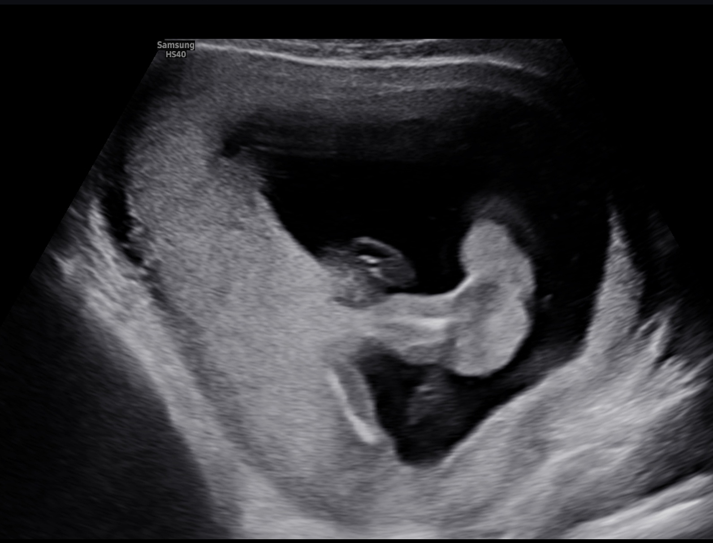
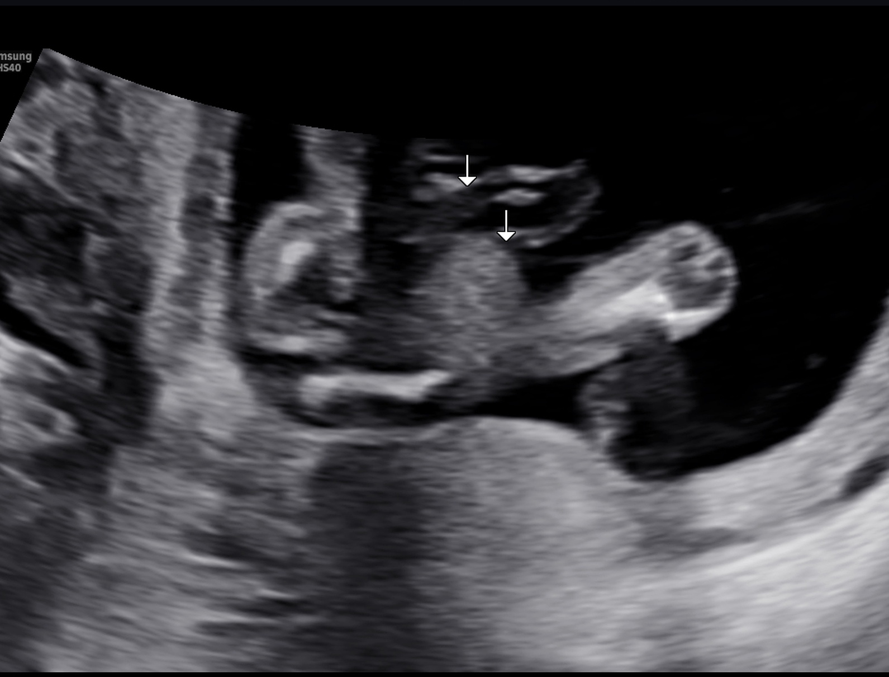
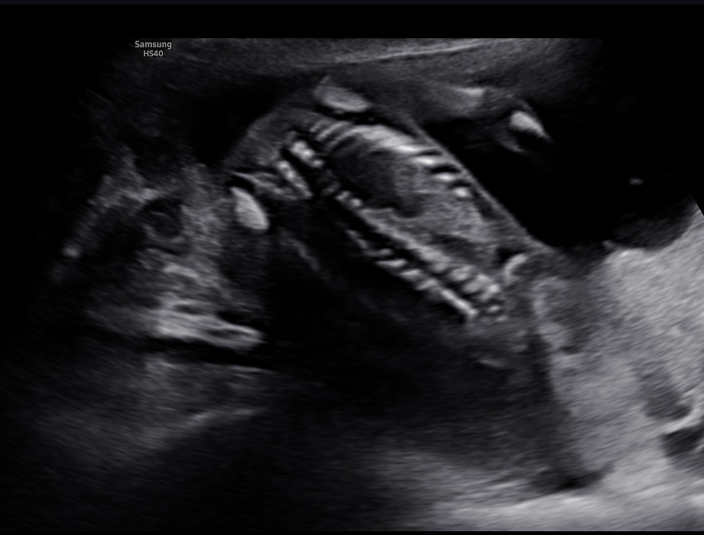
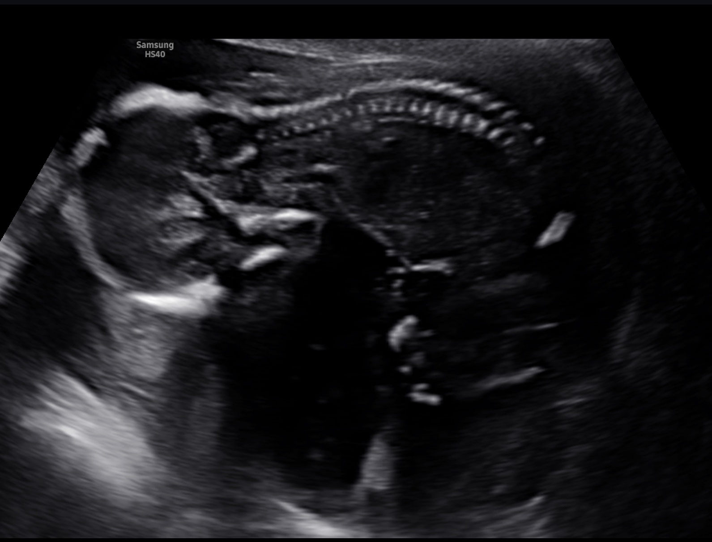
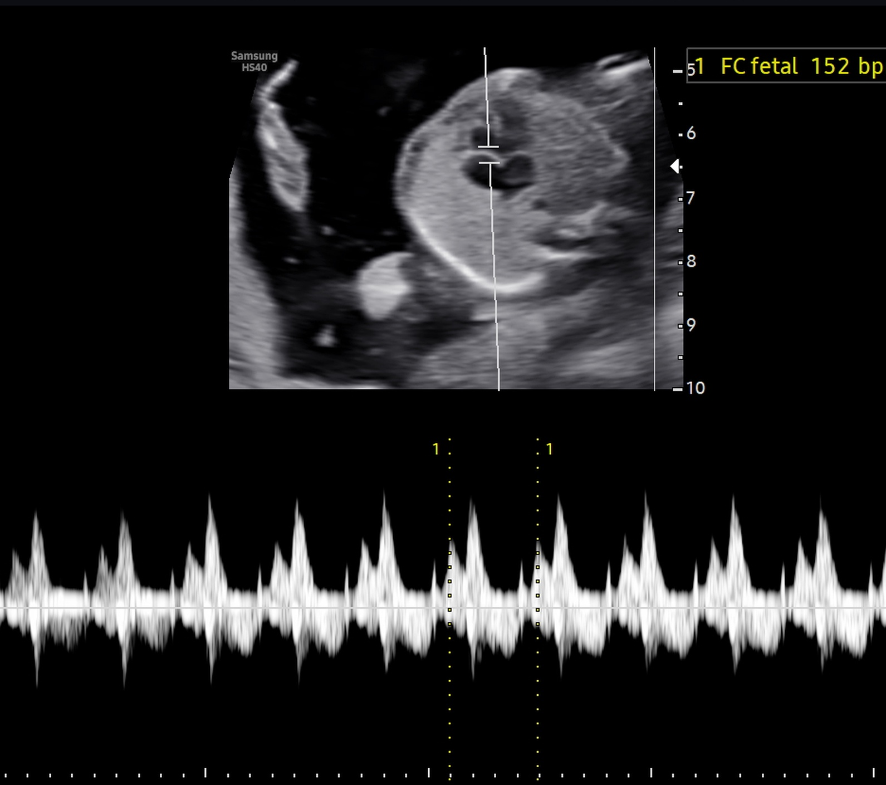
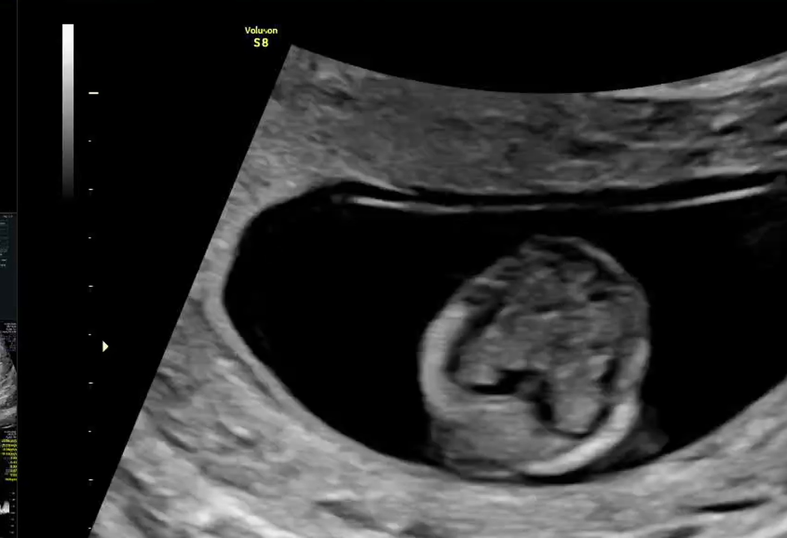
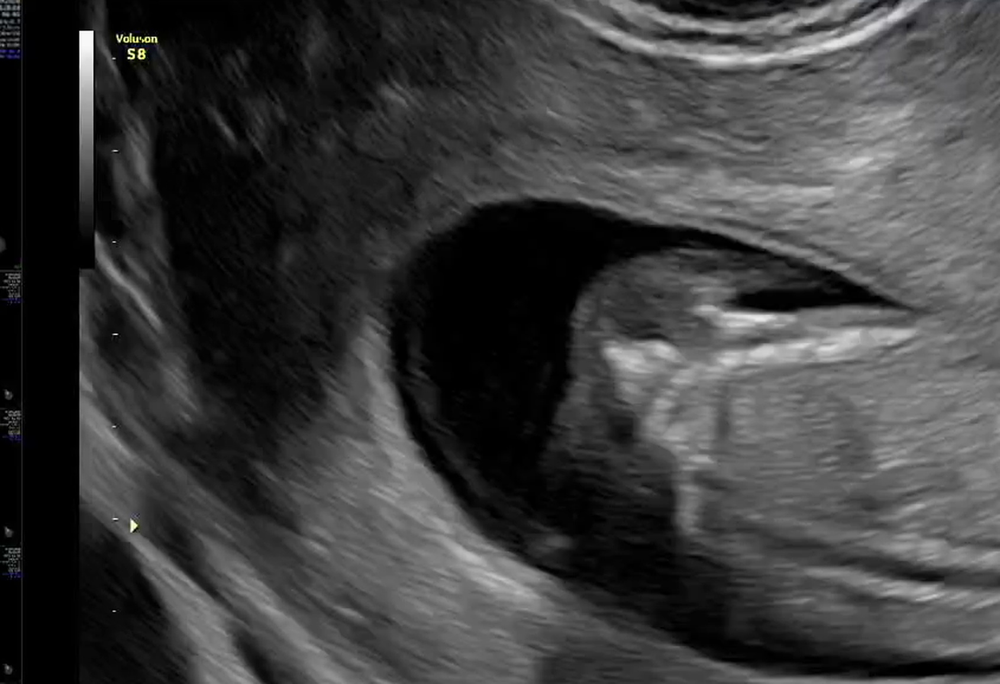
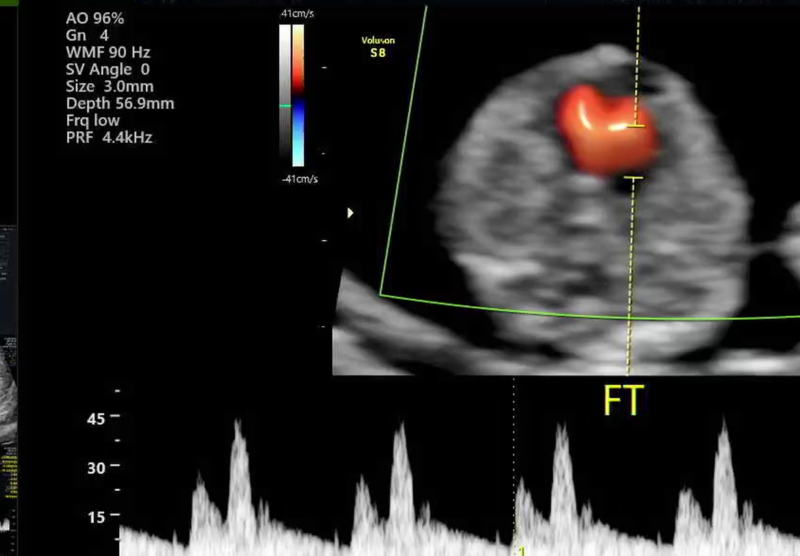

Nossas decisões
O quadro-resumo do que já definimos e do que falta definir.
📣 Plano de anúncio
Decisões a dois 💛O combinado: anúncio público só após as 12 semanas (~meados de setembro/2026).
Consultas & exames
O mapa completo do pré-natal — o que acontece, quando, e o que significa cada nome estranho. 😄
• De 32 a 36 semanas → a cada 15 dias
• De 36 semanas até o parto → 1x por semana
📔 A caderneta Gestar Bem agora é o documento oficial do pré-natal: vai junto em TODA consulta e entra na mala da maternidade.
1º trimestre (agora até ~26/09/2026)
2º trimestre (~26/09/2026 a ~09/01/2027)
3º trimestre (~09/01/2027 até o parto)
📖 Mini-glossário
🏥 Plano de saúde — contatos e unidades
Tudo o que vocês podem precisar ligar ou consultar, num lugar só.
Gestar Bem / PRIORI (Tatiane): (41) 3340-3037 · priori@paranaclinicas.com.br
Pronto Atendimento Digital: (41) 3003-6291
Central de Relacionamento: 4020-5175
SAC: 0800 025 5175
Informações gerais: (41) 3340-3000
Maternidade Santa Cruz: (41) 99288-6059
• Atendimento: seg a sex 7h–18h40 · sábado 7h–11h
• Regulação de guias: seg a sex 7h–18h40
• Laboratório (coleta): seg a sex 7h–11h · sábado 7h–10h
⚠️ A coleta é só de manhã. Para exames em jejum, chegar cedo!
• Atendimento e regulação de guias: 24 horas
• Laboratório de emergência: 24 horas
Bom saber para urgências fora do horário comercial (para questões da gestação, a referência segue sendo a Maternidade Santa Cruz).
• Atendimento e regulação: seg a sex 7h–18h45 · sábado 7h–12h45
• Laboratório: seg a sex 7h–15h
• Coleta infantil: seg a sex 7h–11h, 4º andar 👶 (guardar para quando o bebê nascer)
Vigência desde 11/08/2025 (carências cumpridas ✓)
🧪 Resultados de exames
O histórico de vocês, em português. Quem interpreta oficialmente é sempre o médico — aqui é só pra chegarem na consulta sabendo o que perguntar.
💊 Medicações da gestação
Receita de 31/07/2026 · Dr. Marcio Sasso · código MLA4WPPCarrinho da gestação
Tudo que precisa ser comprado até (e depois de) abril — farmácia, enxoval, quarto, casa. Marquem quando comprarem. 🛒
Enxoval do OliverTudo o que o Oli já ganhou, com fotos, e o que ainda falta. Pra compartilhar, abra e toque em "Copiar link para a família".➕ Adicionar item
Alimentação por fase
O essencial do que ajuda, o que evitar, e os mitos. (Orientações gerais — a nutricionista/obstetra da Carolline sempre têm a palavra final.)
🍽️ Plano alimentar
Prescrição da Fabiani Julieta Mendes (CRN-PR 5328) · 06/08/2026 — e a semana de vocês montada em cima dela.
• 1 fatia de pão integral + 2 ovos (mexidos ou cozidos)
• Crepioca: 1 ovo + 2 col. sopa de tapioca
• Pão de queijo de frigideira: 1 ovo + 1 col. requeijão light + 1 col. tapioca + 1 fatia de queijo
• Arroz + feijão — evitar juntar carboidratos (arroz + macarrão + batata no mesmo prato)
• Carnes cozidas, assadas ou grelhadas
• Não beber líquidos junto da refeição
• 1 fruta cítrica: laranja, limão, acerola ou abacaxi
🍗 Proteína reforçada: 180 a 200 g de carne/proteína no almoço E no jantar, ou 1 dose de whey protein isolado (30 g) por dia.
🌰 Mix de sementes: chia, linhaça, semente de abóbora, girassol e gergelim.
• Escolher UM carboidrato: se o prato é nhoque, lasanha, macarrão, polenta, quirera ou batata, vai nele e pula o arroz (ou o contrário).
• Metade do prato de salada e legumes — a escola serve salada todo dia.
• Caprichar na proteína do dia (meta: 180–200 g).
• Fritura (batata frita, palha, doce frita): pouca, e compensar com salada.
• Sobremesa: nos dias de fruta, escolher uma cítrica; se não tiver, a laranja de casa salva.
• Levar sempre na bolsa: potinho de sementes + uma fruta cítrica. Resolve 90% dos dias.
• Água antes ou depois do almoço, nunca durante.
O almoço dos dias úteis já vem preenchido com o cardápio da Renovação 🏫, com a dica de adaptação. O resto vem com sugestão do plano — é só tocar e mudar o que quiserem.
📈 Peso na gestação
Registre o peso 1x por semana. A faixa verde é o ganho saudável para o IMC pré-gestacional — o alvo é subir DENTRO dela, nunca emagrecer. A nutri do Gestar Bem acompanha junto.
🎯 Bingo nutricional
🗒️ Diário alimentar
Anotem alguns dias antes da consulta com a nutri — vira um retrato honesto da rotina, muito melhor que a memória. 😄
🚫 Evitar durante TODA a gestação
- Álcool: zero. Não existe dose segura.
- Carnes, peixes e ovos crus ou malpassados (sushi com peixe cru, carpaccio, ovo mole) — risco de toxoplasmose e outras infecções.
- Queijos não pasteurizados (alguns frescos artesanais) e leite cru.
- Peixes com muito mercúrio: cação, peixe-espada, atum em excesso.
- Cafeína: limitar a ~200 mg/dia (1–2 xícaras de café). Vale contar refri de cola e energético.
- Adoçantes e ultraprocessados em excesso; cuidado com chás "naturais" — vários são contraindicados, sempre confirmar com o médico.
- Lavar bem frutas/verduras e cuidado ao mexer com terra ou areia (toxoplasmose — a caixa de areia não, mas atenção com jardim; e quem limpa os "presentes" da Úrsula não é problema, toxoplasmose é de gato, não cachorro 🐶).
1º trimestre — fundação e sobrevivência aos enjoos
Agora- Ácido fólico religiosamente (previne má-formação do tubo neural) + vitaminas prescritas.
- Contra enjoo: refeições pequenas e frequentes (a cada 2-3h), bolacha água e sal ao acordar antes de levantar, gengibre (chá ou bala), evitar cheiros fortes e frituras.
- Hidratação constante — se vomitar muito, avisar o médico.
- Se ela só conseguir comer poucas coisas nessas semanas, tudo bem — o bebê é minúsculo e as reservas dela dão conta. Sem culpa.
2º trimestre — a fase de ouro
~Out/2026 a Jan/2027- Ferro (carnes magras, feijão, folhas escuras) + vitamina C junto para absorver melhor (laranja no almoço!).
- Cálcio: leite, iogurte, queijos pasteurizados — o esqueleto do bebê está em obra.
- Ômega-3 (cérebro do bebê): sardinha, salmão, ovos enriquecidos.
- Fibras + água: intestino preso é queixa clássica da gestação; aveia, frutas com casca, chia ajudam muito.
- Moderar doces e massas refinadas — é a fase em que o corpo fica mais propenso à diabetes gestacional (por isso o TOTG).
3º trimestre — reta final
Jan a Abr/2027- Refeições menores e mais frequentes: o bebê comprime o estômago e o refluxo aparece. Evitar deitar logo após comer.
- Manter ferro e proteína (preparação para o parto e amamentação).
- Hidratação reforçada — ajuda até nas câimbras e no líquido amniótico.
- Curiosidade com alguma evidência: tâmaras diárias nas últimas semanas podem favorecer o trabalho de parto. Baratinho de testar. 😄
- Deixar já pensado o "kit lanche pós-parto" — amamentar dá uma fome épica.
Casa & finanças
Organizando o ninho — e o bolso — com calma e sem sufoco.
🏠 Decisão: reforma ou decoração?
Marquem o que decidirem (dá pra mudar depois):
- Se estrutural: fechar projeto e pedreiro até set/2026 → obra out-dez/2026 → janeiro pra limpeza e montagem.
- Se decoração: definir o cômodo do bebê até out/2026, comprar móveis grandes (berço, cômoda, poltrona de amamentação) até nov/2026 — prazo de entrega de móveis costuma ser 30-60 dias.
- Tinta do quarto: usar tinta à base d'água, sem odor, e pintar com antecedência + ventilação.
- Praticidade > Pinterest: poltrona confortável pra amamentar de madrugada vale mais que qualquer item decorativo. 😄
💰 Organização financeira
Três "caixinhas" mentais (ou reais, no banco) resolvem quase tudo:
- Caixinha 1 — Chegada (gasto único): enxoval, móveis, carrinho, bebê conforto, eventual obra/decoração. Meta: valor definido até out/2026 e compras diluídas até fev/2027. Black Friday (nov/2026) é excelente para carrinho, bebê conforto e eletrônicos como babá eletrônica.
- Caixinha 2 — Recorrente (novo custo mensal): fraldas (~R$ 200-350/mês no começo), plano de saúde do bebê como dependente, consultas/vacinas particulares se optarem, futura escolinha (essa vocês têm em casa 😄).
- Caixinha 3 — Colchão do puerpério: reserva para os 2-3 primeiros meses, considerando que a Carolline vai pausar a agenda por ~1 mês+ e a renda dela reduz temporariamente. Ideal: 2-3 meses do "custo de vida + bebê" guardados antes de março/2027.
- Enxoval: façam a lista antes de comprar qualquer coisa (bebê recém-nascido usa muito menos do que as lojas dizem). Priorizar: bebê conforto (obrigatório pra sair da maternidade), berço com colchão certificado, fraldas RN/P, roupinhas básicas, itens de amamentação.
- Chá de bebê: além de festejar, é ajuda prática real — a lista de presentes bem-feita cobre boa parte da Caixinha 1.
- Usar os pontos/milhas acumulados (Ultravioleta, Livelo) para trocar por produtos ou vale-compras pode aliviar o enxoval.
💼 Trabalho — plano de vocês dois
- Carolline (psicóloga autônoma): comunicar os pacientes com ~2 meses de antecedência (fev/2027); definir plano para cada paciente durante a pausa (encaminhamento temporário, contato de emergência, ou pausa combinada); reduzir a agenda gradualmente no 3º trimestre em vez de parar de uma vez; pausa mínima de 1 mês, retorno gradual conforme ela sentir.
- Robert (direção escolar): abril/2027 é meio do ano letivo — deixar mapeado até fev/2027 quem cobre o quê na escola nas 2-3 primeiras semanas; delegar com antecedência é presente pra você mesmo.
- Rede de apoio (a força de vocês 🙏): vale montar uma "escala carinhosa" — quem ajuda com comida na primeira semana, quem fica com a Úrsula nos dias do parto, quem é o contato que avisa todo mundo (pra vocês não responderem 200 mensagens da maternidade).
O grande dia
Mala, documentos e o que esperar — pronto para qualquer via de parto.
📄 Documentos (numa pasta única)
👜 Mala da Carolline
👶 Mala do bebê
🎒 Mochila do Robert (acompanhante)
🚨 Sinais de "é agora" (quando ir pra maternidade)
- Contrações regulares: a cada 5 minutos, durando ~1 minuto, por pelo menos 1 hora (regra 5-1-1).
- Bolsa rota: perda de líquido (mesmo sem dor) → ir direto, anotar a hora e a cor do líquido.
- Sangramento vivo em quantidade → ir imediatamente.
- Bebê parado: redução clara dos movimentos no 3º tri → ligar pro obstetra.
- Salvem no celular: telefone do obstetra, da maternidade e o trajeto testado (com alternativa de horário de pico).
- Urgências em QUALQUER fase da gestação: a referência indicada pelo Gestar Bem é a Maternidade Santa Cruz (41) 99288-6059 — vale desde já, não só no parto.
- Fora do horário comercial, para outras questões: CIM CIC atende 24h (R. Manoel Valdomiro de Macedo, 2851) · Pronto Atendimento Digital (41) 3003-6291.
📝 Plano de parto — perguntas para levar ao obstetra (~30-34 sem)
- Qual via de parto ele recomenda e por quê? Como ele conduz se o trabalho de parto demorar?
- O Robert pode acompanhar tudo (é direito por lei — Lei do Acompanhante nº 11.108)?
- Contato pele a pele imediato e amamentação na primeira hora são prática padrão dele/da maternidade?
- Clampeamento tardio do cordão? Quem corta o cordão?
- Analgesia disponível 24h na maternidade escolhida?
🍼 Primeiros dias pós-parto (para não se perder)
Nosso álbum
As cenas que a gente vai querer rever mil vezes. 💛
❤️ O coração batendo
24/08/2026 · 8 semanas e 2 dias · 167 bpm
❤️ O coração batendo · take 2
24/08/2026 · duas semanas antes eram 108 bpm
💃 Dançando
Os primeiros movimentos — a Carol ainda não sente, mas ele já se mexe
💃 Dançando · take 2
"Movimentos: presentes, iniciais" — direto do laudo
🧸 Em 3D
A fase "ursinho de goma" — cabecinha, corpo curvado e os brotinhos dos braços










Cada ultrassom virou um ponto. A curva é a dele.
Os links dos vídeos e laudos completos das clínicas. 🔒 Ficam salvos só na nuvem privada de vocês.
Dicas & aprendizados
Tudo que médicos, família e amigos forem ensinando — guardado aqui pra não se perder no WhatsApp. 😄